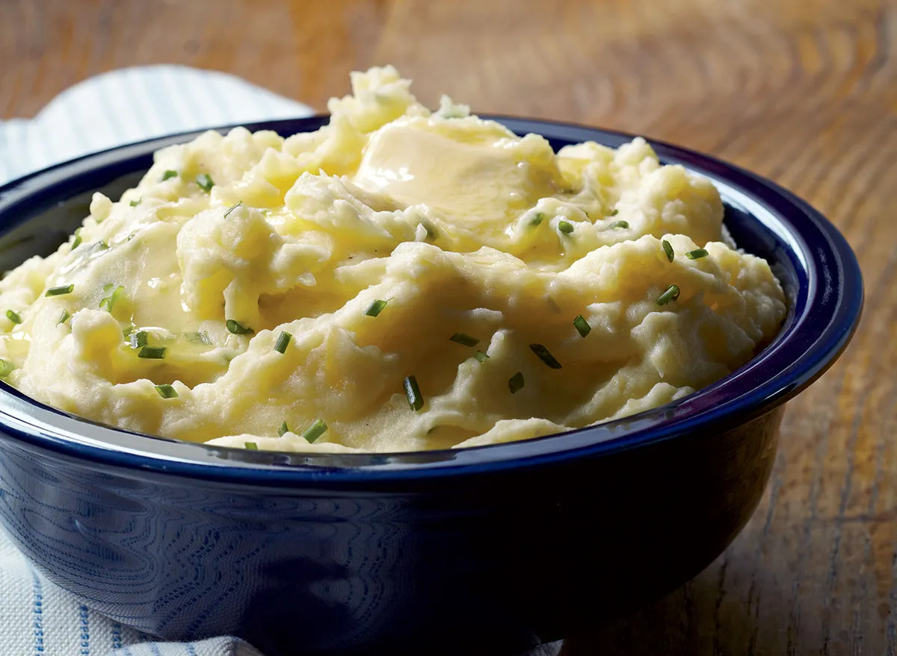

Garlic Mashed Potatoes

Description
Ingredients
Potatoes.
Garlic.
Seasonings.
Milk and Butter
Whats the procedure to Mash some Potatoes?
- Gather all ingredients.
- Combine potatoes, garlic, and 1 tablespoon of the salt in a medium saucepan with enough water to cover by 1 inch. Bring to a boil over high. Reduce heat to medium-low, and simmer until potatoes are fork-tender, 10 to 12 minutes.
- Drain potatoes and return to hot saucepan. Stir until dry, about 1 minute.
- Add butter, 1 piece at a time, stirring gently until melted before the next addition.
- Using a potato masher, mash in milk until smooth. Stir in 1 teaspoon salt and white pepper.
- Transfer potatoes to a serving bowl and top with more butter, if desired.